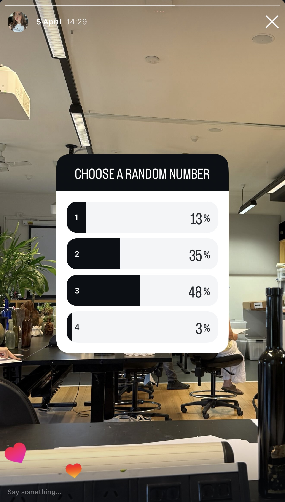
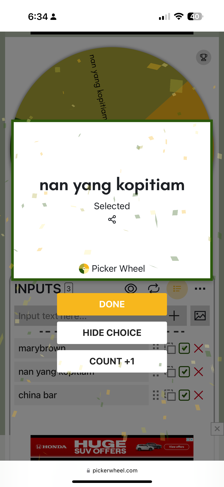

WEEK 5(homework)
1. Slave to the Algorithm: Instagram Poll
For this task, I assigned each numbers from 1-4 to a protein for lunch, 1=Chicken, 2=Beef, 3=Turkey, 4=Tuna.
Then, I created a poll on my instagram story, asking people to choose a random number between 1 and 4.
Based on the vote rankings, I planned my meals that I have to cook from Monday to Thursday.
Turkey had the most votes, which became my Monday meal where I made a comforting bowl soup with turkey meatballs,
beef on Tuesday (I tried the viral hot honey sweet potato bowl recipe from tiktok which was delicious (and is also another algorithm)),
chicken on Wednesday (chicken sandwich), and tuna on Thursday (tuna sandwich).

2. Spinning Wheel - Deciding What to Eat

 For the second activity, I used a spinning wheel generator to decide what my friends and I would order for dinner. We were being very indecisive, so this felt like the perfect time to hand over control to the algorithm. It ended up being fun and we were actually nervous to see what it will decide. We ended up ordering from Nan Yang Kopitiam, and we shared 2 meals, pork knuckle and hainanese chicken rice.
For the second activity, I used a spinning wheel generator to decide what my friends and I would order for dinner. We were being very indecisive, so this felt like the perfect time to hand over control to the algorithm. It ended up being fun and we were actually nervous to see what it will decide. We ended up ordering from Nan Yang Kopitiam, and we shared 2 meals, pork knuckle and hainanese chicken rice.